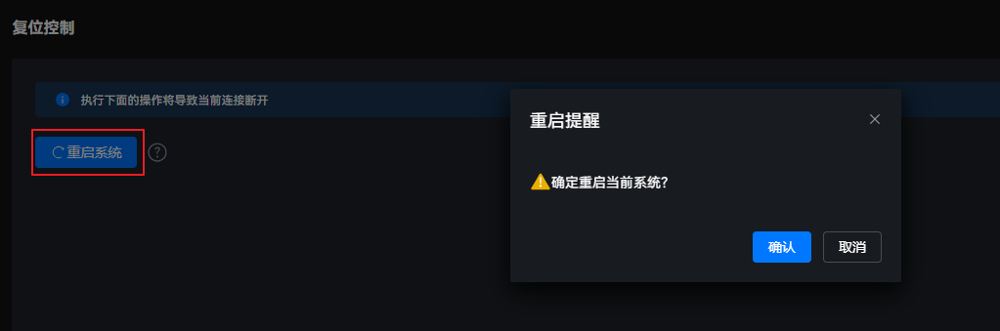

使用场景
重启系统会影响正在执行的用户业务，强制下电再上电可能会损坏系统数据。在日常维护过程中，用户可根据需要进行选择。
重启系统
- 在主菜单中选择。图1 复位控制

- 单击“重启系统”，弹出操作确认提示框。图2 系统重启

单击“重启系统”后，系统将被强制重启，该操作会影响正在执行的用户业务。
- 单击“确认”。等待系统完成重启。
重启系统会影响正在执行的用户业务，强制下电再上电可能会损坏系统数据。在日常维护过程中，用户可根据需要进行选择。
单击“重启系统”后，系统将被强制重启，该操作会影响正在执行的用户业务。